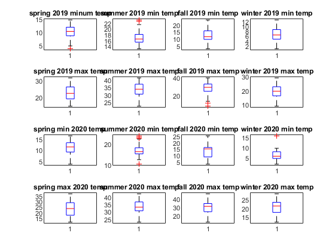
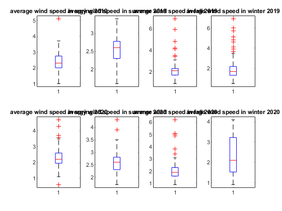
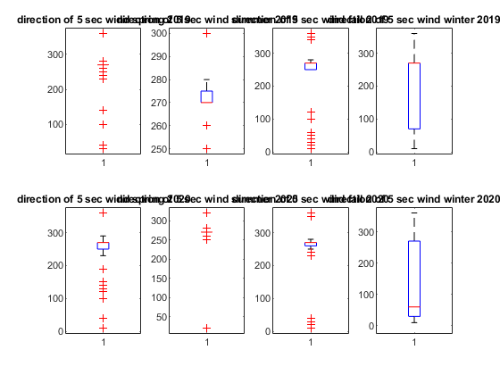
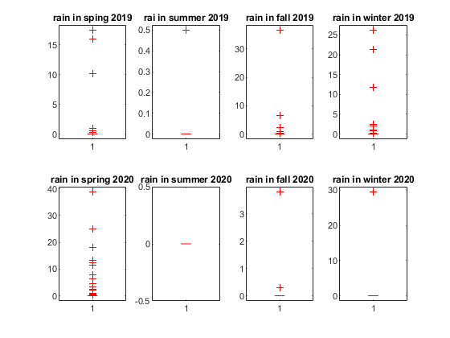

Contents
info=readtable('Riverside2019_2020m.csv');
info=info(:,4:end);
data=info{:,:};
Tmin=data(:,8);
Tmax=data(:,7);
Tmin19=Tmin(1:365,1);
Tmin20=Tmin(366:end,1);
Tmax19=Tmax(1:365,1);
Tmax20=Tmax(366:end,1);
figure
tiledlayout(2,2)
min19=boxplot(nexttile,Tmin19);
title('min temp in 2019')
max19=boxplot(nexttile,Tmax19);
title('max temp in 2019')
min20=boxplot(nexttile,Tmin20);
title('min temp in 2020')
max20=boxplot(nexttile,Tmax20);
title('max temp in 2020')
Warning: Unable to set 'Position', 'InnerPosition', 'OuterPosition', or
'PositionConstraint' for objects in a TiledChartLayout
Warning: Unable to set 'Position', 'InnerPosition', 'OuterPosition', or
'PositionConstraint' for objects in a TiledChartLayout
Warning: Unable to set 'Position', 'InnerPosition', 'OuterPosition', or
'PositionConstraint' for objects in a TiledChartLayout
Warning: Unable to set 'Position', 'InnerPosition', 'OuterPosition', or
'PositionConstraint' for objects in a TiledChartLayout

part 2
springmin19=Tmin(60:151,1);
summermin19=Tmin(152:243,1);
fallmin19=Tmin(244:334,1);
wintermin19=Tmin(335:425,1);
springmax19=Tmax(60:151,1);
summermax19=Tmax(152:243,1);
fallmax19=Tmax(244:334,1);
wintermax19=Tmax(335:425,1);
springmin20=Tmin(426:517,1);
summermin20=Tmin(518:609,1);
fallmin20=Tmin(610:700,1);
wintermin20=Tmin(701:731,1);
springmax20=Tmax(426:517,1);
summermax20=Tmax(518:609,1);
fallmax20=Tmax(610:700,1);
wintermax20=Tmax(701:731,1);
figure
tiledlayout(4,4)
boxplot(nexttile,springmin19);
title('spring 2019 minum temp')
boxplot(nexttile,summermin19);
title('summer 2019 min temp')
boxplot(nexttile,fallmin19);
title('fall 2019 min temp');
boxplot(nexttile,wintermin19);
title('winter 2019 min temp');
boxplot(nexttile,springmax19);
title('spring 2019 max temp')
boxplot(nexttile,summermax19);
title('summer 2019 max temp')
boxplot(nexttile,fallmax19);
title('fall 2019 max temp');
boxplot(nexttile,wintermax19);
title('winter 2019 max temp');
boxplot(nexttile,springmin20)
title('spring min 2020 temp ')
boxplot(nexttile,summermin20);
title('summer 2020 min temp')
boxplot(nexttile,fallmin20);
title('fall 2020 min temp');
boxplot(nexttile,wintermin20);
title('winter 2020 min temp');
boxplot(nexttile,springmax20)
title('spring max 2020 temp')
boxplot(nexttile,summermax20);
title('summer 2020 max temp')
boxplot(nexttile,fallmax20);
title('fall 2020 max temp');
boxplot(nexttile,wintermax20);
title('winter 2020 max temp');
Warning: Unable to set 'Position', 'InnerPosition', 'OuterPosition', or
'PositionConstraint' for objects in a TiledChartLayout
Warning: Unable to set 'Position', 'InnerPosition', 'OuterPosition', or
'PositionConstraint' for objects in a TiledChartLayout
Warning: Unable to set 'Position', 'InnerPosition', 'OuterPosition', or
'PositionConstraint' for objects in a TiledChartLayout
Warning: Unable to set 'Position', 'InnerPosition', 'OuterPosition', or
'PositionConstraint' for objects in a TiledChartLayout
Warning: Unable to set 'Position', 'InnerPosition', 'OuterPosition', or
'PositionConstraint' for objects in a TiledChartLayout
Warning: Unable to set 'Position', 'InnerPosition', 'OuterPosition', or
'PositionConstraint' for objects in a TiledChartLayout
Warning: Unable to set 'Position', 'InnerPosition', 'OuterPosition', or
'PositionConstraint' for objects in a TiledChartLayout
Warning: Unable to set 'Position', 'InnerPosition', 'OuterPosition', or
'PositionConstraint' for objects in a TiledChartLayout
Warning: Unable to set 'Position', 'InnerPosition', 'OuterPosition', or
'PositionConstraint' for objects in a TiledChartLayout
Warning: Unable to set 'Position', 'InnerPosition', 'OuterPosition', or
'PositionConstraint' for objects in a TiledChartLayout
Warning: Unable to set 'Position', 'InnerPosition', 'OuterPosition', or
'PositionConstraint' for objects in a TiledChartLayout
Warning: Unable to set 'Position', 'InnerPosition', 'OuterPosition', or
'PositionConstraint' for objects in a TiledChartLayout
Warning: Unable to set 'Position', 'InnerPosition', 'OuterPosition', or
'PositionConstraint' for objects in a TiledChartLayout
Warning: Unable to set 'Position', 'InnerPosition', 'OuterPosition', or
'PositionConstraint' for objects in a TiledChartLayout
Warning: Unable to set 'Position', 'InnerPosition', 'OuterPosition', or
'PositionConstraint' for objects in a TiledChartLayout
Warning: Unable to set 'Position', 'InnerPosition', 'OuterPosition', or
'PositionConstraint' for objects in a TiledChartLayout

Part3
avgwind=data(:,1);
spring19wind=avgwind(60:151,1);
summer19wind=avgwind(152:243,1);
fall19wind=avgwind(244:334,1);
winter19wind=avgwind(335:425,1);
spring20wind=avgwind(426:517,1);
summer20wind=avgwind(518:609,1);
fall20wind=avgwind(610:700,1);
winter20wind=avgwind(701:731,1);
figure
tiledlayout(2,4)
boxplot(nexttile,spring19wind);
title('average wind speed in spring 2019')
boxplot(nexttile,summer19wind);
title('avergy wind speed in summer 2019')
boxplot(nexttile,fall19wind);
title('averge wind speed in fall 2019');
boxplot(nexttile,winter19wind);
title('averge wind speed in winter 2019');
boxplot(nexttile,spring20wind);
title('average wind speed in spring 2020')
boxplot(nexttile,summer20wind);
title('avergy wind speed in summer 2020')
boxplot(nexttile,fall20wind);
title('averge wind speed in fall 2020');
boxplot(nexttile,winter20wind);
title('averge wind speed in winter 2020');
Warning: Unable to set 'Position', 'InnerPosition', 'OuterPosition', or
'PositionConstraint' for objects in a TiledChartLayout
Warning: Unable to set 'Position', 'InnerPosition', 'OuterPosition', or
'PositionConstraint' for objects in a TiledChartLayout
Warning: Unable to set 'Position', 'InnerPosition', 'OuterPosition', or
'PositionConstraint' for objects in a TiledChartLayout
Warning: Unable to set 'Position', 'InnerPosition', 'OuterPosition', or
'PositionConstraint' for objects in a TiledChartLayout
Warning: Unable to set 'Position', 'InnerPosition', 'OuterPosition', or
'PositionConstraint' for objects in a TiledChartLayout
Warning: Unable to set 'Position', 'InnerPosition', 'OuterPosition', or
'PositionConstraint' for objects in a TiledChartLayout
Warning: Unable to set 'Position', 'InnerPosition', 'OuterPosition', or
'PositionConstraint' for objects in a TiledChartLayout
Warning: Unable to set 'Position', 'InnerPosition', 'OuterPosition', or
'PositionConstraint' for objects in a TiledChartLayout

part 4
direction5=data(:,10);
spring19direction5=direction5(60:151,1);
summer19direction5=direction5(152:243,1);
fall19direction5=direction5(244:334,1);
winter19direction5=direction5(335:425,1);
spring20direction5=direction5(426:517,1);
summer20direction5=direction5(518:609,1);
fall20direction5=direction5(610:700,1);
winter20direction5=direction5(701:731,1);
figure
tiledlayout(2,4)
boxplot(nexttile,spring19direction5);
title('direction of 5 sec wind spring 2019')
boxplot(nexttile,summer19direction5);
title('direction of 5 sec wind summer 2019')
boxplot(nexttile,fall19direction5);
title('direction of 5 sec wind fall 2019');
boxplot(nexttile,winter19direction5);
title('direction of 5 sec wind winter 2019');
boxplot(nexttile,spring20direction5);
title('direction of 5 sec wind spring 2020')
boxplot(nexttile,summer20direction5);
title('direction of 5 sec wind summer 2020')
boxplot(nexttile,fall20direction5);
title('direction of 5 sec wind fall 2020');
boxplot(nexttile,winter20direction5);
title('direction of 5 sec wind winter 2020');
Warning: Unable to set 'Position', 'InnerPosition', 'OuterPosition', or
'PositionConstraint' for objects in a TiledChartLayout
Warning: Unable to set 'Position', 'InnerPosition', 'OuterPosition', or
'PositionConstraint' for objects in a TiledChartLayout
Warning: Unable to set 'Position', 'InnerPosition', 'OuterPosition', or
'PositionConstraint' for objects in a TiledChartLayout
Warning: Unable to set 'Position', 'InnerPosition', 'OuterPosition', or
'PositionConstraint' for objects in a TiledChartLayout
Warning: Unable to set 'Position', 'InnerPosition', 'OuterPosition', or
'PositionConstraint' for objects in a TiledChartLayout
Warning: Unable to set 'Position', 'InnerPosition', 'OuterPosition', or
'PositionConstraint' for objects in a TiledChartLayout
Warning: Unable to set 'Position', 'InnerPosition', 'OuterPosition', or
'PositionConstraint' for objects in a TiledChartLayout
Warning: Unable to set 'Position', 'InnerPosition', 'OuterPosition', or
'PositionConstraint' for objects in a TiledChartLayout

part5
rain=data(:,3);
rainspring19=rain(60:151,1);
rainsummer19=rain(152:243,1);
rainfall19=rain(244:334,1);
rainwinter19=rain(335:425,1);
rainspring20=rain(426:517,1);
rainsummer20=rain(518:609,1);
rainfall20=rain(610:700,1);
rainwinter20=rain(701:731,1);
figure
tiledlayout(2,4)
boxplot(nexttile,rainspring19);
title('rain in sping 2019')
boxplot(nexttile,rainsummer19);
title('rai in summer 2019')
boxplot(nexttile,rainfall19);
title('rain in fall 2019');
boxplot(nexttile,rainwinter19);
title('rain in winter 2019');
boxplot(nexttile,rainspring20);
title('rain in spring 2020')
boxplot(nexttile,rainsummer20);
title('rain in summer 2020')
boxplot(nexttile,rainfall20);
title('rain in fall 2020');
boxplot(nexttile,rainwinter20);
title('rain in winter 2020');
Warning: Unable to set 'Position', 'InnerPosition', 'OuterPosition', or
'PositionConstraint' for objects in a TiledChartLayout
Warning: Unable to set 'Position', 'InnerPosition', 'OuterPosition', or
'PositionConstraint' for objects in a TiledChartLayout
Warning: Unable to set 'Position', 'InnerPosition', 'OuterPosition', or
'PositionConstraint' for objects in a TiledChartLayout
Warning: Unable to set 'Position', 'InnerPosition', 'OuterPosition', or
'PositionConstraint' for objects in a TiledChartLayout
Warning: Unable to set 'Position', 'InnerPosition', 'OuterPosition', or
'PositionConstraint' for objects in a TiledChartLayout
Warning: Unable to set 'Position', 'InnerPosition', 'OuterPosition', or
'PositionConstraint' for objects in a TiledChartLayout
Warning: Unable to set 'Position', 'InnerPosition', 'OuterPosition', or
'PositionConstraint' for objects in a TiledChartLayout
Warning: Unable to set 'Position', 'InnerPosition', 'OuterPosition', or
'PositionConstraint' for objects in a TiledChartLayout

part 6
part 7
n19min=0;
n19max=0;
for i=1:365
T =Tmin19(i);
if T<=20
n19min=n19min+1;
end
TT=Tmax19(i);
if TT>=27
n19max=n19max+1;
end
end
n20min=0;
n20max=0;
for i=1:365
T=Tmin20(i);
if T<20
n20min=n20min+1;
end
TT=Tmax20(i);
if TT>27
n20max=n20max+1;
end
end
part 8
smoke=data(:,17);
smoke19=smoke(1:365);
smoke20=smoke(366:end);
haz19=0;
haz20=0;
for i=1:365
s19=smoke19(i);
if s19==1
haz19=haz19+1;
end
s20=smoke20(i);
if s20==1
haz20=haz20+1;
end
end
foggy=data(:,13);
foggy19=foggy(1:365);
foggy20=foggy(366:end);
fog19=0;
fog20=0;
for i=1:365
f19=foggy19(i);
if f19==1
fog19=fog19+1;
end
f20=foggy20(i);
if f20==1
fog20=fog20+1;
end
end